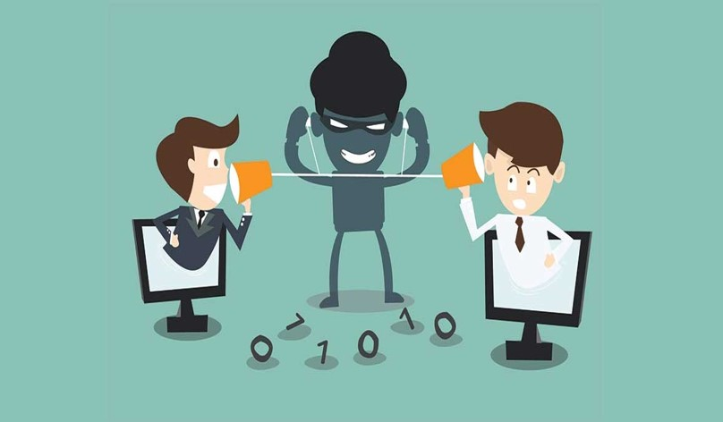
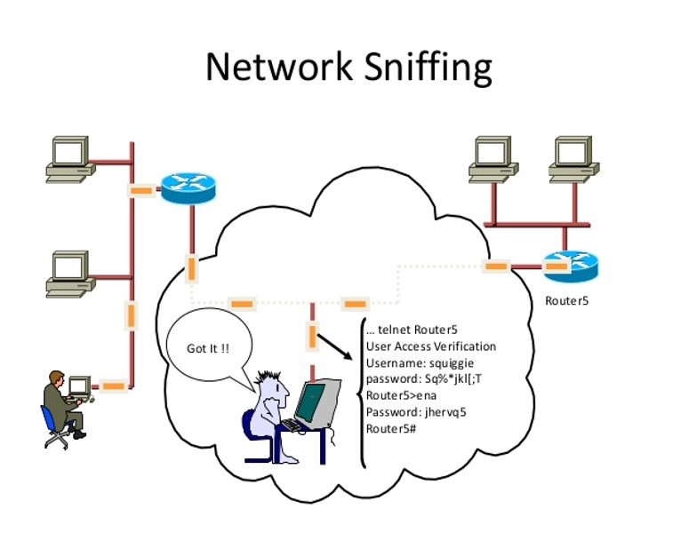
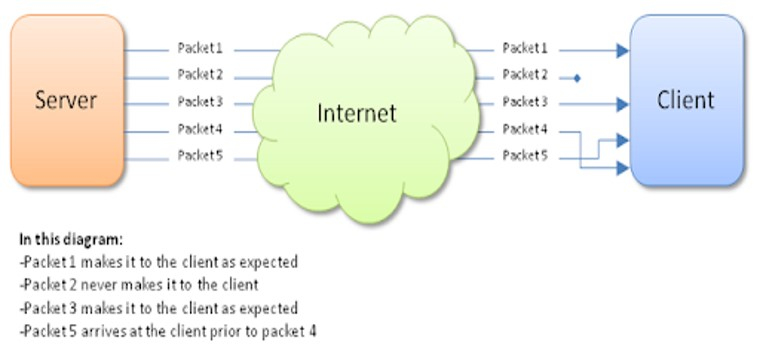
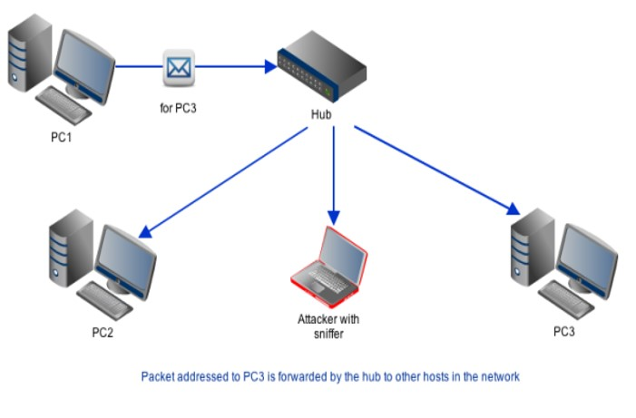
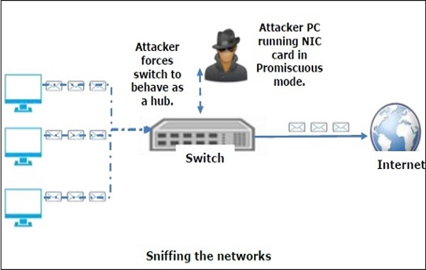
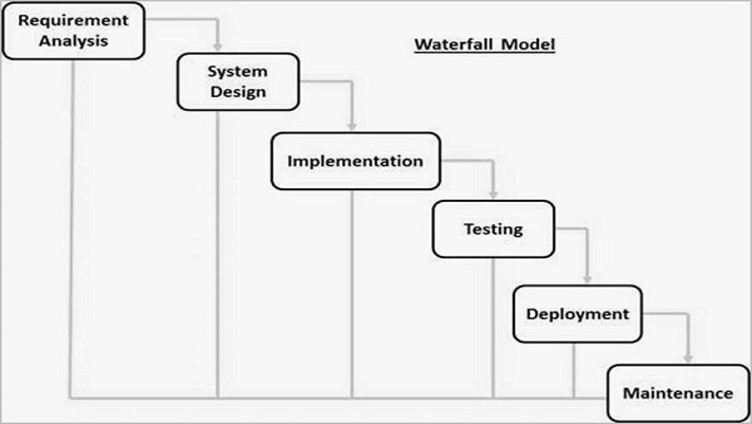

|
| Version 1.0 |
TABLE OF CONTENT
|
Introduction

Network Sniffing

Types of Packet Sniffing
There are two main types of packet sniffers:

Sniffing through hub i.e. is passive sniffing:-

Sniffing through switch i.e. is active sniffing:-

Software requirment specification:
External Interface Requirements:
Hardware Interfaces
Software Interfaces
This software requires following software interfaces:
| Jpcap is an open source network packet capture library based on the libpcap and winpcap libraries that you can use with Java to capture and display network traffic on linux, windows and mac. Jpcap captures Ethernet, TCP, UDP, IPv4, IPv6 etc packets and analyzes each packet’s header and data payload. |

Limitations: